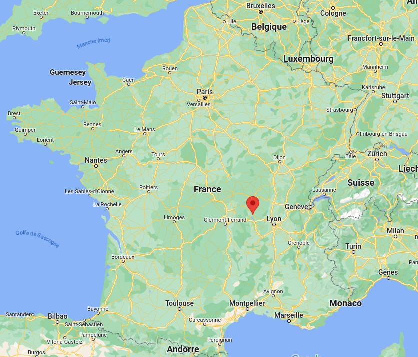
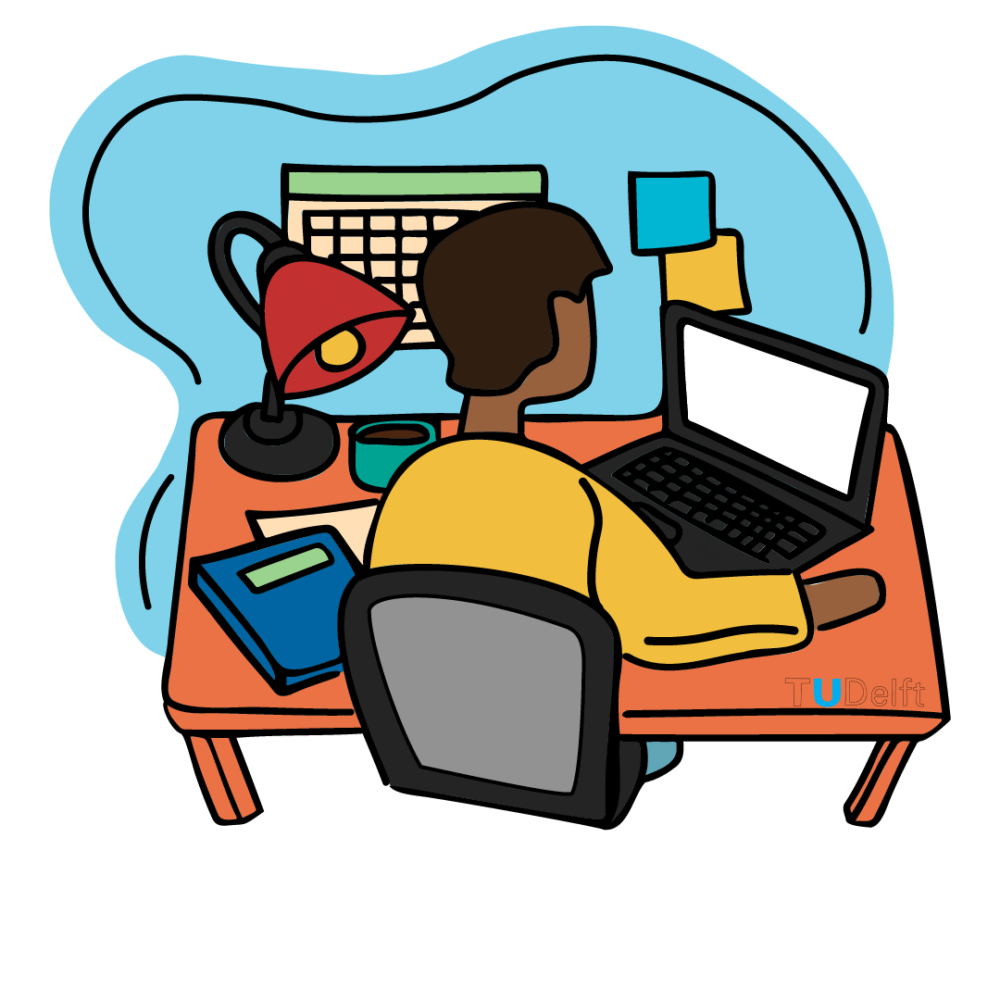

À propos de moi
Je m'appelle Lucas Jonnard, j'ai 19 ans et je suis originaire de Roanne, en région Auvergne-Rhône-Alpes. Je suis actuellement étudiant en seconde année de BUT Informatique à l'IUT de Nantes.
J'ai choisi de faire mes études aussi loin de ma région de naissance afin d'en découvrir de nouvelles. Je suis passionné par la découverte de nouveaux horizons, en particulier par les recoins qu'offrent la France mais aussi par les bâtiments uniques des villes étrangères.
Je voue également une grande passion pour la musique qui m'accompagne tout au long de mes journées. J'adore particulièrement les musiques rock et j'aimerai bien apprendre à jouer du violon.

Une autre activité que j'apprécie beaucoup est le sport qui me permet de me changer les idées et booster mon bien-être. J'aime pratiquer la marche et la course en solo pour me ressourcer et le badminton entre amis pour me dépenser et passer du bon temps.
Je suis fan de l'univers des mangas de type shōnen qui me permettent de voyager à travers leurs histoires mouvementées dans des univers immaginaires captivants. J'aime cependant aussi lire des romans de science-fiction et des courtes histoires sur internet.

Si je devais citer une dernière passion, ce serait celle de la création de petits jeux-vidéos pour m'amuser. J'ai l'habitude de me lancer de petits défis visant à créer de petits jeux-vidéos sous Unity ou autre pour apprendre de nouvelles choses tout en restant dans un esprit d'amusement.
En ce qui concerne mon parcours, j'ai effectué mes années de collège au collège de la Côte Roannaise à Renaison puis mes années de lycée aux lycées Jean Puy et Hippolyte Carnot à Roanne où j'ai obtenu mon baccalauréat général spécialités maths - NSI avec la mention Bien. Je suis actuellement en études à l'IUT de Nantes afin d'obtenir mon BUT Informatique.
